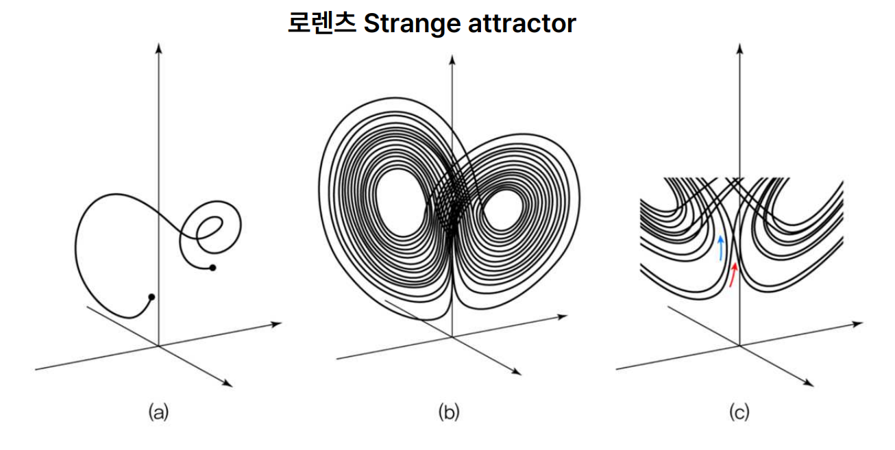
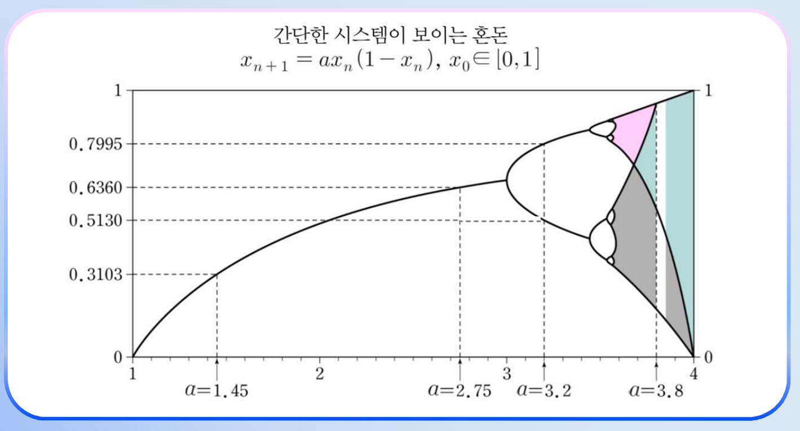
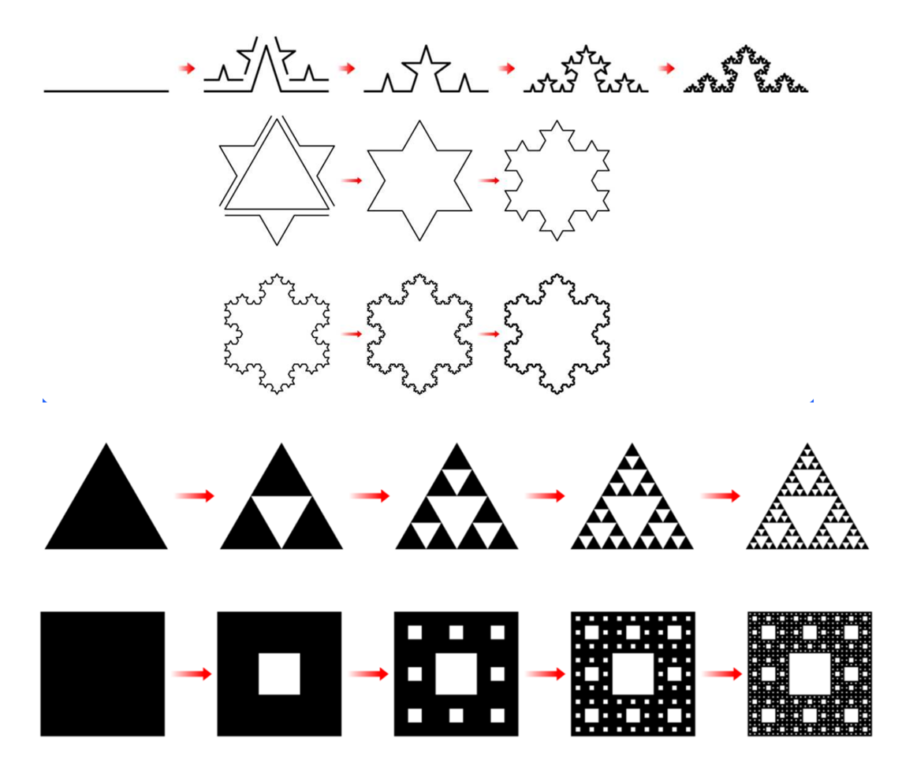
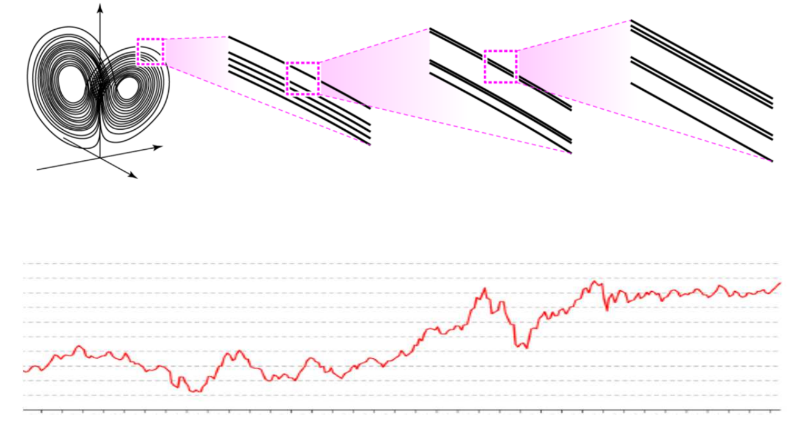
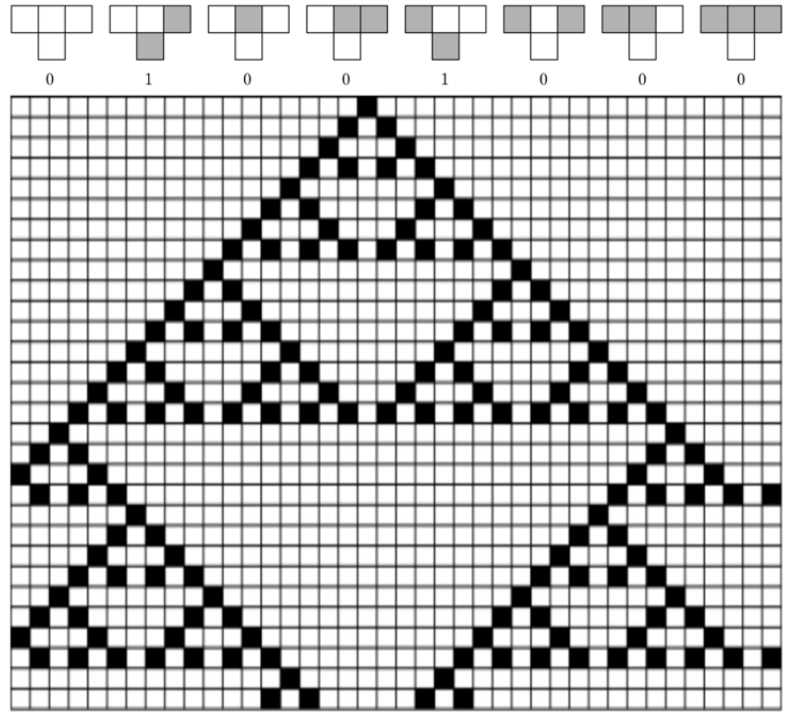

결론적으로 복잡해 보이는 게 내부적으로 그렇게 복잡할 필요는 없다. 아주 간단한 규칙으로부터 복잡해 보이는 듯한 것들을 얼마든지 만들어낼 수 있다.
인공지능을 우리가 만드는데, 지능은 자연이 가지고 있는 속성이고 그것을 인공적으로 만들어보려고 하는 거다. 지능은 복잡해 보인다. 그러나 꼭 그렇다고 해서 그런 시스템을 만들 때 시스템 자체 내부도 복잡해야 되느냐? 그렇지는 않다는 것을 이번 주차에서 다룬다.
"복잡해 보이는 게 내부적으로 그렇게 복잡할 필요는 없다. 아주 간단한 규칙으로부터 복잡해 보이는 것들을 얼마든지 만들어낼 수 있다."
— 강태원 교수
13주차 구성
1차시: 혼돈과 프랙털 — 나비와 꽃
2차시: 1차원 세포 자동자 (Cellular Automata)
3차시: 2차원 세포 자동자 — 콘웨이의 라이프 게임
1차시혼돈(Chaos)과 나비효과
버터플라이 이펙트 = 초기치 민감성. 작은 차이가 큰 변화를 일으키는 시스템.
혼돈 시스템 (Chaos System)
예측 불가능한 변화를 내포한 시스템. 무질서(disorder)와는 구별됨.
로렌츠의 이상한 끌개 (Lorenz's Strange Attractor)
로렌츠(Edward Lorenz)는 아주 유명한 기상학자다. 기상에 관한 연구를 하면서 동역학계(시간에 따라 변하는 시스템)를 다루다가 이런 현상을 발견했다.
어느 날 컴퓨터로 기상을 예측하다가, 입력값으로 온도가 27.5, 27.3 같은 값을 넣는데, 소수점 뒤 7~8자리의 값을 잘라버렸다. "뭐 이까짓 거" 하고. 그런데 예측 결과가 처음에는 비슷하게 가다가 시간이 지나면서 완전히 달라졌다. 자르기 전엔 화창인데 자르고 난 다음엔 비바람.
이게 바로 초기치 민감성(Sensitivity to Initial Conditions)이다. 작은 차이가 큰 변화를 일으키는 현상. 버터플라이 이펙트(Butterfly Effect)라고도 한다.

로렌츠의 이상한 끌개(Strange Attractor) — 나비 모양의 혼돈 시스템
혼돈 ≠ 무질서
혼돈(Chaos)은 무질서(disorder)와 다르다.
구분
혼돈
무질서
예측 가능성
예측 불가능
완전 랜덤
패턴
어지러우면서도 패턴 있음
패턴 없음
의미
생명이 나오는 영역
아무것도 안 나옴
"Life at the Edge of Chaos" — 혼돈의 언저리에 생명이라는 것이 있다.
간단한 동역학 식: xₙ₊₁ = A·xₙ·(1−xₙ)
한 줄짜리 식인데 A 값에 따라 행태가 완전히 달라진다.
A 값
x₀
결과
1.45
0.1
한 값으로 빠르게 수렴
2.75
0.6
한 값으로 느리게 수렴
3.2
0.7
두 값 교대 (0.5130 ↔ 0.7995)
3.8
0.2
패턴 없이 무질서
주기 배증 (Bifurcation)

주기 배증(Bifurcation) — 가지가 2→4→8→16으로 갈라지는 다이어그램
A 값을 계속 늘려가면서 살펴보면, 어느 순간부터 한 값에서 두 값으로 갈라지고, 또 어느 시점에서 네 값, 그다음 여덟 값으로 갈라진다. 이걸 주기 배증(Period Doubling Bifurcation)이라고 한다.
주기 배증 (Bifurcation)
Bi = 두 갈래. 시스템의 주기가 1 → 2 → 4 → 8 → 16 → 32 ... 두 배씩 증가하는 현상. 혼돈 시스템의 대표적 특징.
자기유사성 (Self-similarity)
주기 배증 그림의 일부를 확대해서 보면 전체와 비슷한 모양이 나온다. 더 확대해도 또 같은 모양. 이것이 자기유사성(Self-similarity)이다. 혼돈 시스템의 또 다른 특징.
★ 혼돈의 세 가지 특징 ★
① 초기치 민감성 (Butterfly Effect)
② 주기 배증 (Bifurcation)
③ 자기유사성 (Self-similarity)
일상 속 혼돈 — 비빔밥
비빔밥을 비비면 잘 섞이는 이유? 숟가락으로 반쯤 접는 동작을 반복하면, 처음엔 가까이 있던 알갱이가 빠르게 멀리 떨어진다. 이것도 초기치 민감성. 콩 두 개를 가까이 놓고 반죽을 반씩 접으면 어느 순간 콩이 옆으로 쭉 떨어진다.
1차시프랙털과 자연의 기하학
유클리드 기하학은 인공물용. 프랙털 기하학은 자연을 묘사하기 위해 만들어짐.
유클리드 기하학 vs 프랙털 기하학
구분
유클리드 기하학
프랙털 기하학
대상
직선, 원, 삼각형, 사각형
나무, 숲, 파도, 구름
특징
규칙적·인공적
불규칙·복잡·자기유사
창안
유클리드 (고대)
만델브로 (현대)
산 그림을 그릴 때 삼각형으로 그리지만, 진짜 산은 굉장히 울퉁불퉁하다. 멀리서 보면 삼각형 같아도 가까이서 보면 다르다. 컴퓨터 그래픽스에서 자연을 묘사하려면 프랙털 기하학이 필요하다.
코흐 곡선 (Koch Curve)
직선 하나를 3등분하고, 가운데 부분을 빼고 삼각형 두 변을 붙인다. 그 결과 직선 하나가 네 개로 늘어난다. 각각의 새 직선에 대해 같은 규칙을 반복하면 점점 더 복잡한 모양이 나온다.

코흐 곡선(눈송이)과 시에르핀스키 삼각형 — 대표적 프랙털 도형
시에르핀스키 삼각형 (Sierpinski Triangle)
삼각형 안에서 중점을 찾아 가운데 부분을 파낸다. 남은 작은 삼각형 각각에 대해 똑같이 가운데를 파낸다. 이걸 무한 반복.
★ 충격적 사실 ★
무한 반복 시 면적은 0, 그러나 점의 개수는 무한.
시에르핀스키 카펫은 사각형 버전. 가운데를 파내는 걸 반복.
반슬리의 IFS (Iterative Function System)
반슬리(Michael Barnsley)의 IFS(Iterative Function System, 반복함수 시스템): "렌즈가 여러 개 달린 복사기" 비유.
1번 렌즈는 종이를 이쪽에 축소 복사, 2번 렌즈는 저쪽에, 3번 렌즈는 또 다른 곳에. 결과를 다시 입력으로 넣고 반복하면 점점 자연 형태가 나온다. 고사리(Fern), 나무 등이 만들어진다.
게임·영화 응용
영화·게임에서 풀, 산, 구름, 나무 같은 자연 풍경은 대부분 IFS 같은 프랙털 알고리즘으로 생성된다.
1차시만델브로 집합과 나비와 꽃
만델브로 집합 = 복소수 식 z² + c 반복으로 그려지는 가장 유명한 프랙털. 그 안에 같은 모양이 끝없이 반복.
만델브로 프랙털 (Mandelbrot Set)

만델브로 집합(Mandelbrot Set) — 프랙털의 상징
식 z_{n+1} = z_n² + c (c는 복소수)를 z₀ = 0에서 시작해 반복. 수렴하면 색칠, 발산하면 비워둔다. 수렴 속도에 따라 다른 색.
이 단순한 식에서 끝없이 복잡한 모양이 나오고, 확대해 들어가도 같은 패턴이 반복된다. 자기유사성의 극치.
나비와 꽃 — 1차시의 부제
혼돈 = 나비
프랙털 = 꽃·나무
버터플라이 이펙트의 그 나비
자연의 꽃과 나무
초기치 민감성
자기유사성
"꽃이 있는데 나비가 없거나, 나비가 있는데 꽃이 없으면 좀 이상하다." 혼돈과 프랙털은 항상 같이 다닌다.
★ 핵심 ★ 주식시장의 비밀
주식 가격 그래프 일부를 확대해보면 전체 모양과 비슷하다 (프랙털). 그리고 초기치에 민감하고 자기 참조성(self-reference)이 있어 예측 불가능 (혼돈 시스템). 주식은 로또와 같다 — 누군가는 따지만 그게 항상 나는 아니다.
1차시 정리
혼돈은 자기유사성, 초기치 민감성을 특징으로 한다. 프랙털은 자연의 기하학인데, 혼돈이 있는 곳에는 프랙털이 있다.
2차시1차원 세포 자동자의 세계
"자동차" 아니고 "자동자". 칸마다 살거나 죽는 단순한 시스템.
세포 자동자 (Cellular Automata, CA)
바둑판 모양의 세계에서 각 칸(세포)이 정해진 규칙에 따라 살아있거나 죽거나 하는 시스템. 폰 노이만(von Neumann)이 이론을 정립.
1차원 CA의 세계
바둑판에서 한 줄만 잘라낸 모양. 양 옆으로 무한히 뻗어나가는 1차원 공간
현실적으로는 유한해서, 양 끝을 이어붙여 원통 형태로 처리
각 칸은 0(비어있음) 또는 1(살아있음)
시간이 흐르면 새 줄을 아래에 추가. 그 누적된 모양이 역사가 됨

1차원 세포 자동자(Cellular Automaton) — 32번·72번 규칙의 진화 패턴
2차시 정리
각 세포의 생존 여부는 가까운 이웃에 의해서 정해지는데, 그럼에도 비가역적인 복잡함이 생성된다. 세포 자동자에도 혼돈과 프랙털이 있다.
3차시2차원 세포 자동자 — 콘웨이의 라이프 게임
콘웨이의 라이프 게임 = 가장 유명한 2차원 CA. 단 2개의 규칙으로 놀라운 일이 일어남.